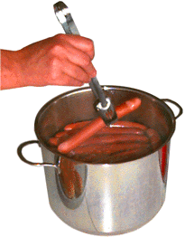
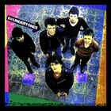

The food of the week this week is pylsa, the Icelandic hotdog. It's not
unlike the North American variety except for the very important fact -as any
Icelander will quickly point out- it is made in Iceland. They're also a
little longer and skinnier.
Yes they eat them with ketchup, onions and mustard here. But you have a
lot of mustards to choose from, and in addition to regular onions they sprinkle
crispy, brown, oven baked onions on them. What makes the experience local is
the invariable and generous application of Remolaði.
I don't know what it is
exactly, but it comes in a squeezable bottle.
Hotdog eating in Iceland is almost ritualistic. Here at Gottfolk, every Friday is
hotdog day in the lunchroom, and hotdogs seem to be the one food you can get anytime,
anywhere. Everything in town seems to close down by sunset
(2pm? Okay maybe not THAT early, but 6pm anyway). The two exceptions seem to be
bars and hotdog stands. If you still have some pocket change left over
from spending your entire paycheck on 3 beers, you'll have no problem
finding a nearby hotdog vendor at which to spend it.
CD of the Week: The Undertones-One of those punk outfits from England

This new punk outfit called The Undertones is really giving Michael Jackson's
"Thriller" a battle for chart supremacy. The jury's still out, but their
debut album entitled "The Undertones" appears to be pretty popular with
the young set here.
It's a poppy album with lots of toe tapping ditties. My personal
favorite is "Male Model". I feel this song really speaks to me. Kevin
likes "Mars Bars" and I can understand why. It's a catchy little
tune. Now that I think about it, maybe "Mars Bars" is my favorite too.
"It helps me, makes me, work, rest and play!"
Correction
The Spunks featured in last week's issue
as the food of the week are not Icelandic. Turns out they're Danish, so are Gajols.
This fact only further supports our theory that the Danes are trying to regain
control of Iceland (which it lost in 1944) by getting the entire island strung
out on these addictive little treats. We're not certain but we suspect the
addictive ingredient is
verfladebehandlingsmiddel (bivoks).